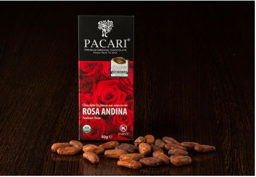

Ecuador domina el mundo del chocolate orgánico
El cacao ecuatoriano es conocido en todo el mundo, pues nuestra historia como
exportadores tiene más de 100 años. Sin embargo, aún somos bastante nuevos en
la comercialización y exportación del producto terminado. Sin embargo, desde hace algunos años,
nuestro chocolate ha ganado reconocimiento mundial.

Conoce más acerca del Cacao, nuestra materia prima
El árbol de cacao es de los valles fluviales de Sudamérica, aunque posteriormente fue llevado a
México por los Mayas antes del siglo VII.
La forma del cacao es de vainas de entre 20 y 30 granos que tienen forma de almendra con dos
centímetros de largo.
La chocolatera, maquina que permitía batir el chocolate mientras se fundía con el calor,
formando un líquido espumoso, se introdujo en Europa a través de la corte francesa. De hecho fue María
Teresa de Austria,
esposa de Luis XIV, fue quien comenzó a usarla a comienzos del siglo XVII para que luego las clases
acomodadas de toda Europa comenzaran a utilizarla.
Cacao fino
A la hora de clasificar el cacao, Peralta cree que es mejor hablar de familias en vez de variedades.
"Hoy se cataloga como cacao fino, el más apreciado por sus sabores florales y frutales,
o cacao de bulto. Sólo el 2,6% de la producción mundial es fino, del cual Ecuador
concentra el 70%, y es el que usamos nosotros". El nacional, cuyo hábitat natural
suele ubicarse en el país que vio nacer a Peralta, acumula elogios. Se habla de un cacao muy
aromático para referirse al ecuatoriano, prestigiosísimo. En 2008, Ecuador declaró al cacao fino
de aroma, cacao Arriba, como la primera denominación de origen (DO) del país, con Vinces, a 100 km
de Guayaquil, como uno de los cantones productores más solventes del país. El de Esmeraldas, frontera
norte con Colombia,
goza de una reputación bárbara, y se integra en la llamada Ruta del Cacao.